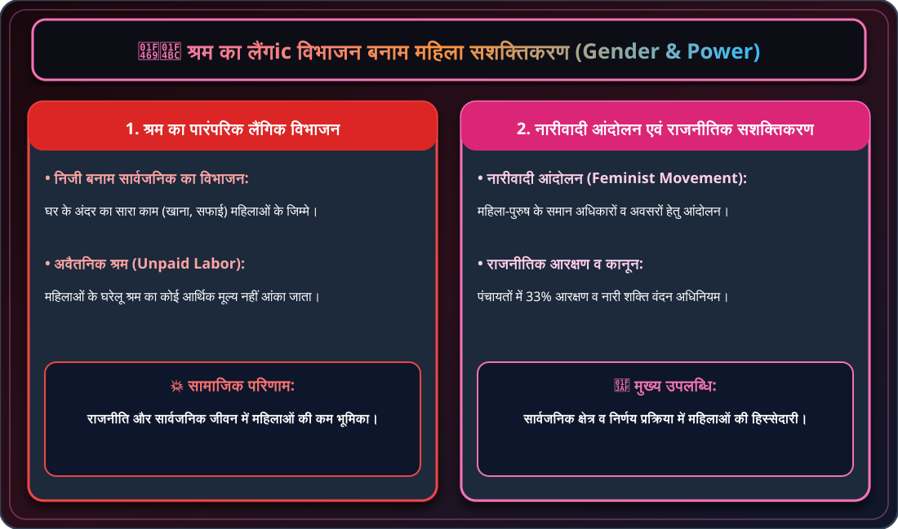
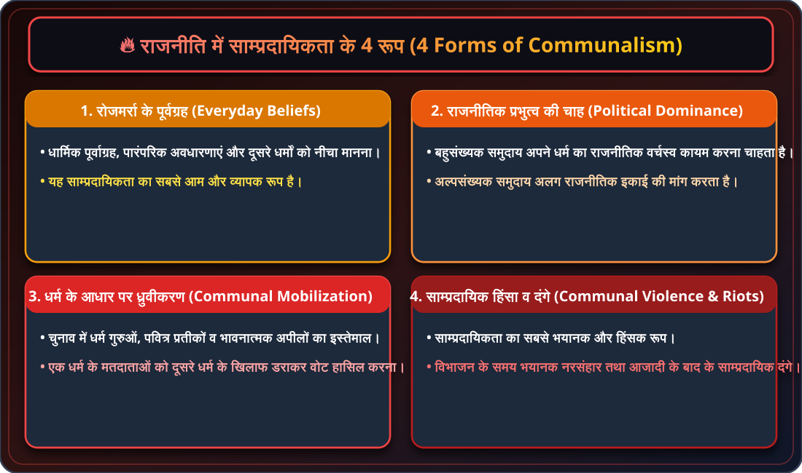
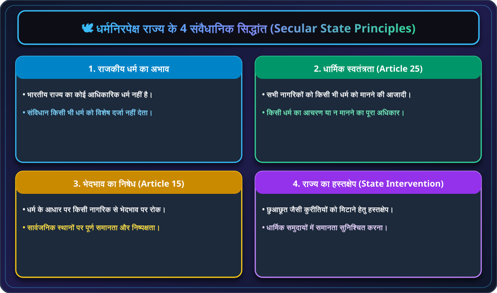
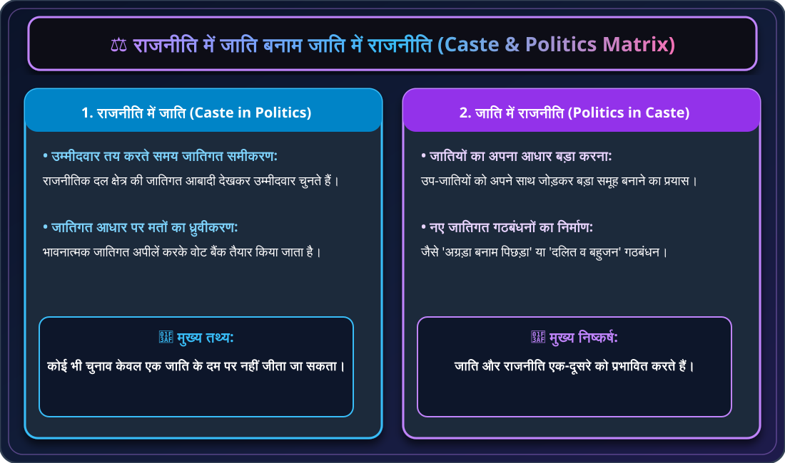

🏛️ कक्षा 10 राजनीति विज्ञान (लोकतांत्रिक राजनीति-2)
अध्याय 3: जाति, धर्म और लैंगिक मसले - मास्टर नोट्स
लोकतंत्र में सामाजिक विविधता का पहला महत्वपूर्ण आयाम लैंगिक विभाजन है। लैंगिक असमानता कोई जैविक नहीं, बल्कि समाज द्वारा बनाई गई रूढ़िवादिता और पितृसत्तात्मक व्यवस्था की उपज है।
श्रम के लैंगिक विभाजन का अर्थ है कि समाज ने काम का ऐसा बंटवारा कर दिया है जिसमें घर के सारे अंदरूनी काम (खाना पकाना, सफाई, कपड़े धोना और बच्चों की देखरेख) औरतों के जिम्मे डाल दिए गए हैं और बाहर का काम पुरुषों के जिम्मे रहता है:
- अवैतनिक श्रम की उपेक्षा: औरतें दिन भर घरेलू काम में खटती हैं, लेकिन उनके श्रम का कोई आर्थिक मूल्य नहीं आंका जाता और न ही उसे समाज में उत्पादक माना जाता है।
- काम की प्रकृति: ऐसा नहीं है कि पुरुष घरेलू काम नहीं कर सकते। जब उन्हीं कामों के पैसे मिलते हैं (जैसे बड़े होटलों में रसोइया या दर्जी का काम), तो पुरुष इसे खुशी-खुशी अपना पेशा बना लेते हैं।

🍳 चित्र 3.1: श्रम का लैंगिक विभाजन
1. घरेलू अवैतनिक कार्य: महिलाओं द्वारा घर के अंदर भोजन पकाना, सफाई व बच्चों की देखरेख करना | 2. बाहर का रोजगार: पुरुषों द्वारा बाहर दफ्तरों, खेतों व कारखानों में आय अर्जित करना।
महिलाओं ने अपने अधिकारों के लिए दुनिया भर में संघर्ष किया और नारीवादी आंदोलन की शुरुआत की। नारीवादी आंदोलन उन आंदोलनों को कहते हैं जो महिलाओं के लिए पुरुषों के समान अधिकारों और अवसरों की मांग करते हैं।
👩💼 नारीवादी आंदोलनों की मुख्य मांगें:
- 1. वोट का अधिकार: महिलाओं को मतदान और चुनाव लड़ने का समान राजनीतिक अधिकार देना।
- 2. शिक्षा व रोजगार: महिलाओं के लिए उच्च शिक्षा और सभी पेशों में समान अवसर सुनिश्चित करना।
- 3. पारिवारिक समानता: व्यक्तिगत और पारिवारिक कानूनों में महिलाओं को पुरुषों के समान अधिकार देना।
📊 पंचायतों में महिला आरक्षण:
13
(कम से कम 33% सीटें स्थानीय निकायों में महिलाओं के लिए आरक्षित)

📢 चित्र 3.8: नारीवादी आंदोलन व समान अधिकार
1. मताधिकार व रैलियां: वोट का अधिकार व राजनीतिक समानता हेतु महिला जुलूस व रैलियां | 2. समान अवसर: शिक्षा, स्वास्थ्य व कार्यक्षेत्र में पुरुषों के समान अधिकार हासिल करना।

🏛️ चित्र 3.10: महिलाओं का राजनीतिक प्रतिनिधित्व व कानून
1. पंचायती राज में 33% आरक्षण: स्थानीय निकायों में 10 लाख से अधिक निर्वाचित महिला प्रतिनिधि | 2. नारी शक्ति वंदन अधिनियम: संसद व विधानसभाओं में 33% सीटें आरक्षित करने वाला ऐतिहासिक कानून।

⚠️ चित्र 3.9: भारत में महिलाओं के साथ भेदभाव
1. कम साक्षरता दर: पुरुषों की तुलना में महिलाओं की कम साक्षरता दर व बीच में पढ़ाई छूटना | 2. समान कार्य हेतु कम वेतन: खेल, सिनेमा व कारखानों में समान काम के बावजूद महिलाओं को कम मजदूरी मिलना।

📊 चार्ट 3.1: श्रम का लैंगिक विभाजन बनाम महिला सशक्तिकरण का समग्र चार्ट
पारंपरिक अवैतनिक श्रम vs नारीवादी आंदोलन, पंचायती राज आरक्षण व संसद में महिला भागीदारी।
सामाजिक विभाजन का दूसरा रूप **धर्म पर आधारित विभेद** है। धर्म और राजनीति का संबंध लैंगिक विभाजन जितना सीधा नहीं है। महात्मा गांधी कहा करते थे कि "धर्म को राजनीति से कभी अलग नहीं किया जा सकता।" उनका तात्पर्य धर्म से नैतिक मूल्यों से था जो सभी धर्मों में समान हैं।
⚠️ सांप्रदायिकता किसे कहते हैं?
जब धर्म को राष्ट्र का मुख्य आधार मान लिया जाता है और एक धर्म के लोग दूसरे धर्म के लोगों के खिलाफ खड़े हो जाते हैं, तो इसे सांप्रदायिकता कहते हैं। इसमें यह माना जाता है कि एक ही धर्म के लोगों के हित समान होते हैं और अलग-अलग धर्मों के लोगों के हित आपस में टकराते हैं।

🕊️ चित्र 3.2: धर्म और राजनीति का सकारात्मक संबंध
1. गांधीजी का विचार: धर्म से तात्पर्य अहिंसा, सत्य व नैतिक मूल्य हैं जो राजनीति का मार्गदर्शन करते हैं | 2. मानवाधिकार आंदोलन: धार्मिक अल्पसंख्यकों के अधिकारों व सुरक्षा हेतु सरकार से मांग उठाना।

⚠️ चित्र 3.11: दैनिक जीवन में सांप्रदायिकता
1. धार्मिक पूर्वाग्रह: अन्य धर्मों के प्रति मन में दुराग्रह व नीचा समझने की सोच | 2. धार्मिक कट्टरता: अपने ही धर्म को श्रेष्ठ मानकर दूसरों से घृणा करना।

📢 चित्र 3.12: राजनीति में सांप्रदायिक गोलबंदी
1. धार्मिक प्रतीकों का इस्तेमाल: चुनाव जीतने हेतु धार्मिक झंडों, पवित्र प्रतीकों व धर्मगुरुओं का प्रयोग | 2. वोटों का ध्रुवीकरण: चुनावी फायदे के लिए एक समुदाय की भावनाओं को भड़काकर वोट मांगना।

💥 चित्र 3.3: सांप्रदायिक हिंसा, दंगे व नरसंहार
1. विभाजन का भयावह अनुभव: 1947 में भारत-पाक विभाजन के समय भीषण सांप्रदायिक हिंसा | 2. आजादी के बाद के दंगे: दंगाग्रस्त क्षेत्रों में संपत्ति का नुकसान व नागरिकों का विस्थापन (सांप्रदायिकता का सबसे भयानक रूप)।

⚠️ चार्ट 3.3: सांप्रदायिकता के 4 प्रमुख रूप
दैनिक पूर्वाग्रह, राजनीतिक गोलबंदी, बहुसंख्यकवाद/पृथकतावाद तथा सांप्रदायिक दंगे व हिंसा।
सांप्रदायिकता से निपटने के लिए हमारे संविधान निर्माताओं ने धर्मनिरपेक्ष राज्य का मॉडल चुना। भारत का कोई भी राजकीय धर्म नहीं है।
🏛️ भारतीय संविधान के धर्मनिरपेक्ष सिद्धांत:
- 1. कोई सरकारी धर्म नहीं: भारत राज्य किसी भी धर्म को आधिकारिक धर्म के रूप में स्वीकार नहीं करता (जैसे श्रीलंका में बौद्ध, पाकिस्तान में इस्लाम या ब्रिटेन में ईसाई धर्म है)।
- 2. धार्मिक स्वतंत्रता (अनुच्छेद 25): प्रत्येक नागरिक और समुदाय को किसी भी धर्म का पालन करने, प्रचार करने या न मानने की पूरी स्वतंत्रता है।
- 3. भेदभाव पर रोक (अनुच्छेद 15): धर्म के आधार पर किसी भी नागरिक के साथ सरकारी नौकरियों या संस्थाओं में भेदभाव नहीं किया जा सकता।
- 4. राज्य का हस्तक्षेप: संविधान राज्य को धार्मिक मामलों में हस्तक्षेप करने की अनुमति देता है यदि वह समानता स्थापित करने हेतु हो (जैसे छुआछूत पर रोक)।

🏛️ चित्र 3.13: धर्मनिरपेक्ष राज्य के 4 संवैधानिक स्तंभ
1. कोई राजकीय धर्म नहीं: सभी धर्मों को समान संवैधानिक संरक्षण | 2. धार्मिक स्वतंत्रता: बिना किसी भय के अपने धर्म के अनुसार पूजा-अर्चना की आज़ादी।

🕊️ चित्र 3.14: सर्वधर्म समभाव व धार्मिक सद्भाव
1. सर्वधर्म प्रार्थना: मंदिर, मस्जिद, गुरुद्वारे व चर्च के प्रतीकों का सम्मान | 2. सामाजिक बंधुत्व: विभिन्न धर्मावलंबियों द्वारा मिलकर राष्ट्रीय पर्व व त्योहार मनाना।

🕊️ चार्ट 3.2: धर्मनिरपेक्ष राज्य के 4 मुख्य संवैधानिक सिद्धांत
राजकीय धर्म का अभाव, धार्मिक स्वतंत्रता, भेदभाव पर रोक तथा राज्य का सुधारात्मक हस्तक्षेप।
लैंगिक मसले और धर्म की तरह **जातिगत असमानता** भी भारत के समाज में गहराई से समाई हुई है। दुनिया के अन्य समाजों में भी पेशा वंशानुगत होता है, परंतु भारत में इसने जाति व्यवस्था का एक विशेष रूप ले लिया।
🌾 जाति व्यवस्था में बदलाव लाने वाले 5 मुख्य कारक:
- 1. आर्थिक विकास: औद्योगीकरण और शहरीकरण के कारण शहरों में यह पता करना कठिन है कि बस या होटल में आपके बगल में कौन सी जाति का व्यक्ति बैठा है।
- 2. साक्षरता और शिक्षा का प्रसार: आधुनिक शिक्षा ने पुरानी जातिगत सोच को कमजोर किया है।
- 3. पेशा चुनने की आजादी: अब लोग वंशानुगत पेशे को छोड़कर अपनी योग्यता के अनुसार काम चुन रहे हैं।
- 4. जमींदारी व्यवस्था का अंत: गांवों में पुरानी जमींदारी व्यवस्था टूटने से जातिगत पकड़ ढीली हुई है।
- 5. संवैधानिक प्रावधान: संविधान के अनुच्छेद 17 द्वारा छुआछूत को दंडनीय अपराध घोषित किया गया है।

🌾 चित्र 3.15: पारंपरिक जाति व्यवस्था व वर्ण व्यवस्था
1. जन्म पर आधारित पेशा: बढ़ई, लोहार, कुम्हार जैसी वंशानुगत श्रम व्यवस्था | 2. सामाजिक ऊंच-नीच: जाति के आधार पर भोजन, शादी व सामाजिक मेलजोल पर कड़े प्रतिबंध।

⚖️ चित्र 3.16: छुआछूत का अंत व संवैधानिक प्रावधान
1. अनुच्छेद 17 द्वारा छुआछूत का अंत: संविधान द्वारा अस्पृश्यता को कानूनन दंडनीय अपराध बनाना | 2. समानता का अधिकार: दलितों व वंचित वर्गों को कुओं, मंदिरों व सार्वजनिक स्थानों का समान अधिकार।

🏙️ चित्र 3.16: आधुनिक शहरीकरण व जातिगत बदलाव
1. शहरों में सार्वजनिक परिवहन: बस, मेट्रो व होटलों में बिना जाति पूछे साथ सफर व भोजन | 2. योग्यता आधारित रोजगार: आईटी, इंजीनियरिंग व व्यापार में जाति के बजाय शैक्षणिक योग्यता का महत्व।

⚖️ चार्ट 3.4: जातिगत असमानता एवं आधुनिक बदलाव के 5 प्रमुख कारक
पारंपरिक वर्ण व्यवस्था vs शहरीकरण, साक्षरता प्रसार, पेशे की आजादी व अस्पृश्यता पर कानूनी रोक।
जाति और राजनीति के बीच संबंध के दो पहलू हैं: एक तरफ **राजनीति में जाति** की भूमिका है, तो दूसरी तरफ **जाति के अंदर राजनीति** का प्रवेश है।
🗳️ चुनाव में जाति की भूमिका:
- 1. टिकटों का बंटवारा: पार्टियां उम्मीदवार तय करते समय चुनाव क्षेत्र की जातियों के हिसाब से टिकट बांटती हैं ताकि चुनाव जीतने लायक वोट मिल सकें।
- 2. मंत्रिमंडल का गठन: सरकार बनाते समय इस बात का ध्यान रखा जाता है कि विभिन्न जातियों के प्रतिनिधियों को मंत्रिमंडल में जगह मिले।
- 3. जातिगत वोट बैंक: राजनीतिक दल जातिगत भावनाओं को उकसाकर अपना 'वोट बैंक' मजबूत करने का प्रयास करते हैं।
❓ क्या केवल जाति ही चुनाव तय करती है? (भ्रांति का निवारण)
यह सोचना गलत है कि चुनाव केवल जाति के आधार पर जीते जाते हैं। वास्तविकता यह है कि:
- 1. कोई भी संसदीय क्षेत्र केवल 1 जाति का नहीं है: भारत में कोई भी ऐसा चुनाव क्षेत्र नहीं है जहाँ केवल एक ही जाति के मतदाता हों। हर उम्मीदवार को जीतने के लिए एक से अधिक जातियों का वोट चाहिए होता है।
- 2. एक ही जाति के कई उम्मीदवार: अक्सर चुनाव में एक ही जाति के कई प्रत्याशी मैदान में होते हैं, जिससे जाति का वोट बंट जाता है।
- 3. सरकार का कामकाज: यदि लोग केवल अपनी जाति को ही वोट देते तो सत्ताधारी विधायक/सांसद कभी चुनाव न हारते। जनता सरकार के काम से असंतुष्ट होने पर अपनी ही जाति के नेता को हरा देती है।

🗳️ चित्र 3.17: टिकट बंटवारे में जातिगत गणित
1. प्रत्याशी चयन में जातिगत आंकड़ा: क्षेत्र की बहुसंख्यक जातियों के आधार पर पार्टी टिकट तय करना | 2. दलीय गठजोड़: चुनाव जीतने के लिए विभिन्न जातिगत समूहों का सामाजिक समीकरण बनाना।

📊 चित्र 3.5: वोट बैंक की राजनीति व जातिगत अपील
1. जातिगत वोट बैंक की धारणा: किसी विशेष जाति का वोट किसी एक दल की बपौती मानना | 2. नेताओं की अपील: अपनी जाति के मतदाताओं को भावनात्मक भाषण देकर गोलबंद करना।

🔄 चित्र 3.18: जाति में राजनीति व नए जातिगत समूह
1. उप-जातियों को साथ लाना: अपनी जाति को बड़ा बनाने के लिए आस-पास की उप-जातियों को जोड़ना | 2. 'अग्रड़ा' व 'पिछड़ा' मोर्चा: चुनावी सौदेबाज़ी हेतु जातियों द्वारा 'अग्रड़ा', 'पिछड़ा' व 'दलित' गठबंधन बनाना।

🗳️ चित्र 3.19: चुनाव केवल जाति पर नहीं जीते जा सकते: 4 अकाट्य प्रमाण
1. कोई एक जाति बहुसंख्यक नहीं: हर प्रत्याशी को सभी जातियों के समर्थन की आवश्यकता | 2. एक ही जाति के कई प्रत्याशी: जातिगत वोटों का बंटवारा | 3. वर्तमान प्रतिनिधियों की हार: सत्ता-विरोधी लहर व काम का मूल्यांकन | 4. विकास व जनमुद्दे निर्णायक: सड़क, बिजली, पानी, रोजगार व जन-कल्याण पर ही अंतिम निर्णय।

💡 चित्र 3.6: विकास, शिक्षा व सरकार का काम ही अंतिम निर्णय तय करता है
1. जाति से ऊपर उठकर मतदान: बिजली, सड़क, पानी, अस्पताल व स्कूल के विकास कार्यों पर वोट देना | 2. एंटी-इंकंबेंसी: काम न करने वाले नेताओं को जनता जाति की परवाह किए बिना चुनाव में हरा देती है।

चित्र 3.20: समावेशी व समतामूलक भारतीय लोकतंत्र
1. विविधता में एकता: जाति, धर्म व लिंग से परे सभी 140 करोड़ भारतीयों का समान नागरिक अधिकार | 2. सशक्त लोकतंत्र: सामाजिक सद्भाव, बंधुत्व व संवैधानिक मूल्यों पर आधारित महान भारत।

⚠️ चित्र 3.7: जातिगत राजनीति का नकारात्मक पहलू
1. समाज में तनाव व बिखराव: केवल जातिगत मुद्दों में उलझने से गरीबी, बेरोजगारी व विकास के असली मुद्दे दब जाना | 2. सामाजिक वैमनस्य: जातियों के बीच आपसी रंजिश व कटुता पैदा होना।

🗳️ चार्ट 3.5: राजनीति में जाति बनाम जाति में राजनीति का समग्र चार्ट
प्रत्याशी चयन व वोट बैंक vs उप-जातियों का विलय, पिछड़ों का सशक्तीकरण व विकास आधारित मतदान।